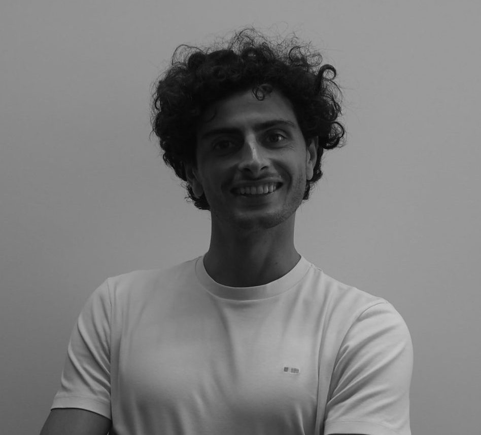

01 ↗
How do we read sleep?
Developing and evaluating automated sleep staging methods using polysomnography and EEG, with a focus on fair comparison and clinical usefulness.
I’m Luigi Fiorillo. I use biomedical signal processing and artificial intelligence to study sleep, the brain, and neurological health.

LUIGI FIORILLO · BIOMEDICAL ENGINEERI work where clinical questions meet complex biological data.
I’m a postdoctoral researcher affiliated with MeDiTech at SUPSI and the Neurocenter at EOC in Switzerland. Since 2026, I have also been a visiting postdoctoral researcher at the Sleep Research Institute in Madrid, supported by an SNSF Postdoc.Mobility grant.
My work combines electrophysiology, wearable sensing, machine learning, and deep learning to better understand sleep and neurological disorders. I care about methods that are useful beyond a benchmark: robust, reproducible tools that researchers and clinicians can trust.
Three connected questions guide my work.
Developing and evaluating automated sleep staging methods using polysomnography and EEG, with a focus on fair comparison and clinical usefulness.
Studying sleep and wake EEG dynamics in neurological conditions, including Parkinson’s disease and restless legs syndrome.
Building open, reproducible machine learning workflows and studying model uncertainty, generalization, and physician supervision.
Projects that connect methods, open tools, and clinical questions.
An open source toolbox for fair evaluation of automated sleep staging. Developed with SUPSI and the National Sleep Research Resource at Harvard, it supports standardized preprocessing, training, and evaluation across large sleep datasets.
Investigating how sleep dependent brain rhythms relate to levodopa induced dyskinesia using high density EEG, actigraphy, and polysomnography. The work also explores acoustic stimulation of slow wave activity.
At the Sleep Research Institute in Madrid, studying the effects of dipyridamole on EEG biomarkers, sleep architecture, and clinical features in restless legs syndrome across sleep and wake states.
A few entry points into my research. Find the full list on Google Scholar or ORCID.
Biomedical engineering foundations, computer science methods, and clinical collaboration.
Sleep Research Institute, Madrid · SNSF Postdoc.Mobility
MeDiTech, SUPSI & Neurocenter, EOC · Lugano
University of Bern · Automated sleep scoring, deep learning & physician supervision
Monti Lab, UCLA · Real time sleep scoring and sleep pattern monitoring
Politecnico di Torino · Machine learning for motor assessment in Parkinson’s disease
University of Naples Federico II
Interested in sleep research, AI for health, biomedical signals, or a collaboration? I’d be glad to hear from you.
Email me